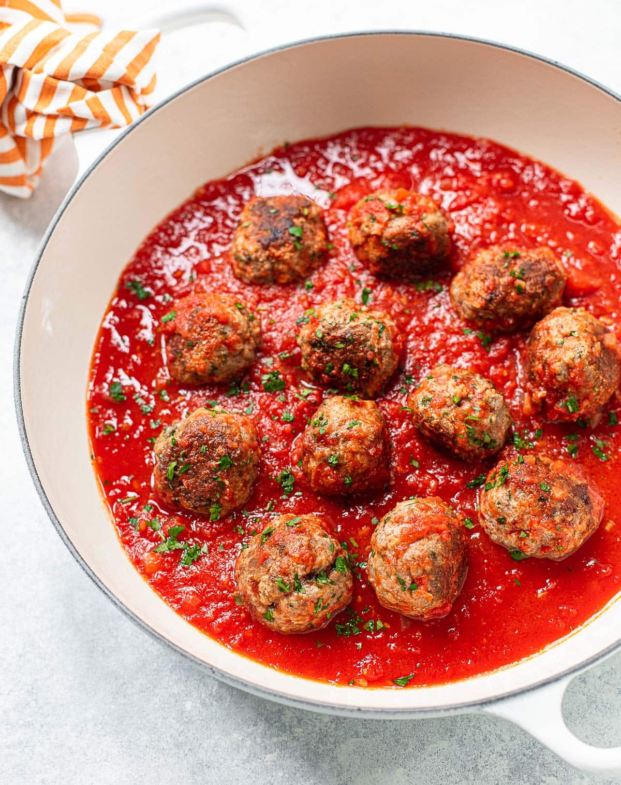

Meatball Recipe

Description
There’s nothing quite as satisfying as a pasta bowl cradling perfectly cooked, twirled and tangled, steaming spaghetti coated in a vibrant, garlicky, San Marzano marinara sauce, all piled high and layered with homemade meatballs throughout! Talk about comfort food at its proudest!
Ingredients
- Ground beef
- Egg
- Breadcrumbs
- Parmesan cheese
- Onion
- Garlic
- Salt and pepper
- Parsley
Steps
- Place all ingredients in a large bowl and stir until combined. If needed, add a Tablespoon of milk to keep mixture wet.
- Scoop the meat from the bowl and form into 1 1/2″ balls. Then place meatballs on baking sheet.
- Place onto prepared baking sheet and bake meatballs uncovered for 17-20 minutes, or until middle is no longer pink. Flip halfway through.
- If desired, simmer with marinara sauce for 10 minutes and serve over cooked pasta.